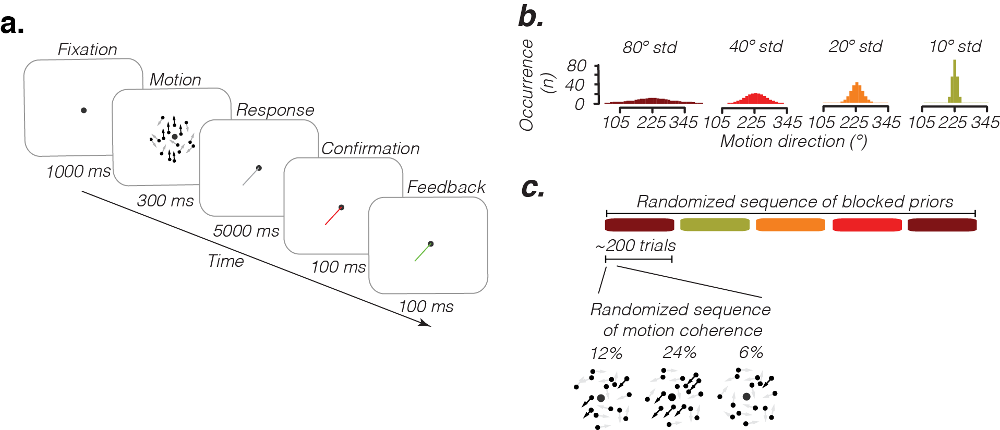

Approaches to inference.
Three main theories have been proposed as to how humans solve inference problems. 1) Humans might be rational : they use optimal statistical solutions to inference problems or 2) irrational and produce maladaptive solutions to inference problems or 3) they use heuristics computational shortcuts that approximate optimal solutions. This fits in with Herbert Simon theory of bounded rationality according to which humans use satisficing solutions (sufficient and satisfying) (Gigerenzer, Psychological review 1996)
Designing an inference experiment.
We designed a motion direction estimation experiment in which humans were asked to estimate the motion direction of noisy stimuli on a computer screen. In this experiment statistical optimality can be achieved by combining noisy evidence of the motion with knowledge of the motion direction statistics learnt over motion stimulus history using Bayesian inference
Estimation error depends on evidence strength ....and on motion direction statistics
Estimate versus displayed motion directions for different motion noise (from 6% to 24% motion coherence).
Why is estimates relationship to physical directions nonlinear?
The bias was also the largest for directions displayed the nearest to the prior mean and the smallest on the opposite side of the prior, producing a nonlinear relationship between displayed and estimated directions. This effect is due to the circularity of the space: the average bias become smaller when directions are displayed further from the prior because the evidence is more and more likely to be pulled from both sides of the prior which reduces the average bias. This decreasing bias with increasing distance effect effectively disappears in a linear space as the evidence is always pulled from one side of the prior.
The variability was also the lowest for directions displayed the nearest to the prior mean and the largest on the opposite side of the prior. This effect was due to the same reason that the average bias decreased further from the prior: evidence were more often pulled from both sides of the prior which increased estimate dispersion.